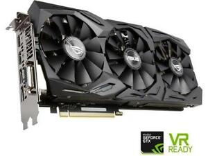
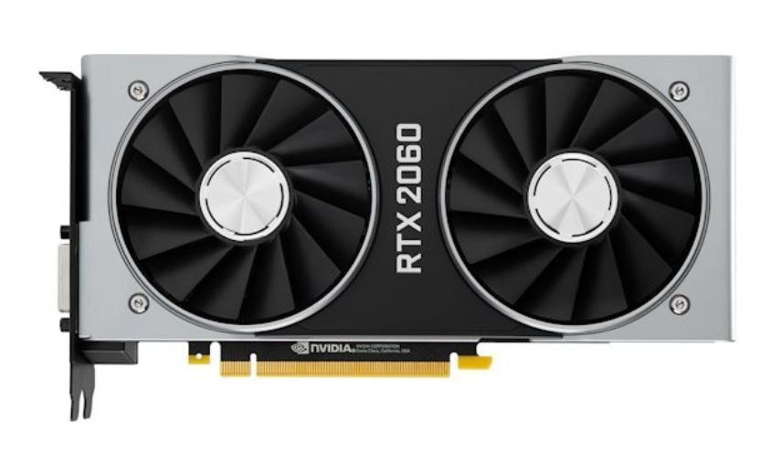
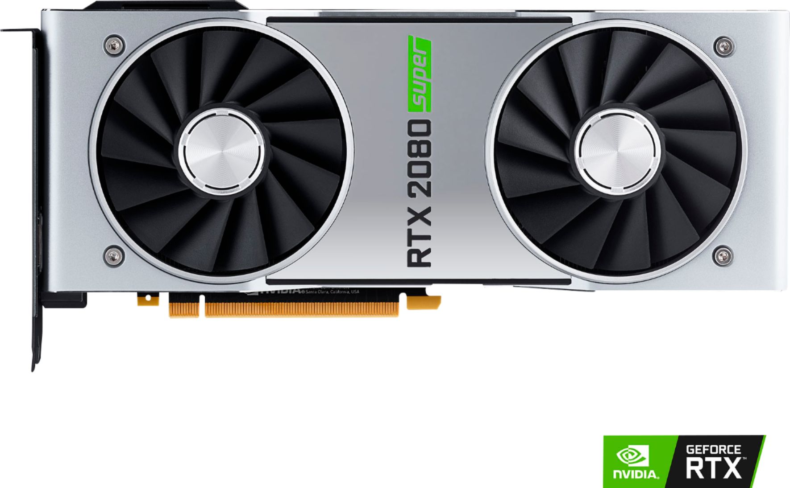
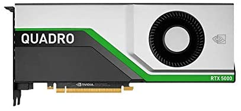

Fourth Generation of Graphic Cards
(All pictures are from ebay and amazon)
GeForce 10 series
In March 2014, Nvidia announced that the successor to Maxwell would be the Pascal microarchitecture; announced on 6 May 2016 and released on 27 May 2016. Architectural improvements include the following:
- n Pascal, an SM (streaming multiprocessor) consists of 128 CUDA cores. Kepler packed 192, Fermi 32 and Tesla only 8 CUDA cores into an SM; the GP100 SM is partitioned into two processing blocks, each having 32 single-precision CUDA Cores, an instruction buffer, a warp scheduler, 2 texture mapping units and 2 dispatch units.
- GDDR5X – New memory standard supporting 10Gbit/s data rates and an updated memory controller. Only the Nvidia Titan X (and Titan Xp), GTX 1080, GTX 1080 Ti, and GTX 1060 (6 GB Version) support GDDR5X. The GTX 1070 Ti, GTX 1070, GTX 1060 (3GB version), GTX 1050 Ti, and GTX 1050 use GDDR5.
- Unified memory – A memory architecture, where the CPU and GPU can access both main system memory and memory on the graphics card with the help of a technology called "Page Migration Engine".
- NVLink – A high-bandwidth bus between the CPU and GPU, and between multiple GPUs. Allows much higher transfer speeds than those achievable by using PCI Express; estimated to provide between 80 and 200 GB/s.
- 16-bit (FP16) floating-point operations can be executed at twice the rate of 32-bit floating-point operations ("single precision")[24] and 64-bit floating-point operations ("double precision") executed at half the rate of 32-bit floating point operations (Maxwell 1/32 rate).
-
GTX 1050
-
GTX 1060

-
GTX 1070
 -
GTX 1080
GeForce 20 series and 16 series
In August 2018, Nvidia announced the GeForce successor to Pascal. The new microarchitecture name was revealed as "Turing" at the Siggraph 2018 conference. This new GPU microarchitecture is aimed to accelerate the real-time ray tracing support and AI Inferencing. It features a new Ray Tracing unit (RT Core) which can dedicate processors to the ray tracing in hardware. It supports the DXR extension in Microsoft DirectX 12. Nvidia claims the new architecture is up to 6 times faster than the older Pascal architecture. A whole new Tensor core design since Volta introduces AI deep learning acceleration, which allows the utilisation of DLSS (Deep Learning Super Sampling), a new form of anti-aliasing that uses AI to provide crisper imagery with less impact on performance.It also changes its integer execution unit which can execute in parallel with the floating point data path. A new unified cache architecture which doubles its bandwidth compared with previous generations was also announced.
The new GPUs were revealed as the Quadro RTX 8000, Quadro RTX 6000 and Quadro RTX 5000. The high end Quadro RTX 8000 features 4,608 CUDA cores and 576 Tensor cores with 48GB of VRAM. Later during the Gamescom press conference, NVIDIA's CEO Jensen Huang, unveiled the new GeForce RTX series with RTX 2080 Ti, 2080, and 2070 that will use the Turing architecture. The first Turing cards were slated to ship to consumers on September 20, 2018. Nvidia announced the RTX 2060 on January 6, 2019 at CES 2019.
On July 2, 2019, Nvidia announced the GeForce RTX Super line of cards, a 20 series refresh which comprises higher-spec versions of the RTX 2060, 2070 and 2080. The RTX 2070 and 2080 were discontinued.
In February 2019, Nvidia announced the GeForce 16 series. It is based on the same Turing architecture used in the GeForce 20 series, but omitting the Tensor (AI) and RT (ray tracing) cores unique to the latter in favour of providing a more affordable graphics solution for gamers while still attaining a higher performance compared to respective cards of the previous GeForce generations.
Like the RTX Super refresh, Nvidia on October 29, 2019 announced the GTX 1650 and 1660 Super cards, which replaced their non-Super counterparts.
Like the RTX Super refresh, Nvidia on October 29, 2019 announced the GTX 1650 and 1660 Super cards, which replaced their non-Super counterparts.
GeForce 30 series
Nvidia officially announced at the GeForce Special Event that the successor to GeForce 20 series will be the 30 series. The GeForce Special Event introduced took place on September 1, 2020 and set September 17 as the official release date for the 3080 GPU, September 24 as the release date for the 3090 GPU and October for the 3070 GPU.